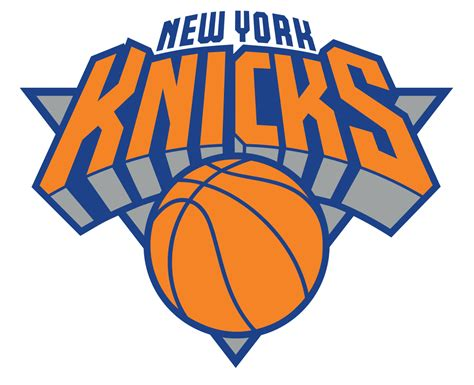

Boaz was a dedicated fan of the New York Knicks. He became hooked on the team in the 90s, although their many playoff upsets have often frustrated him. His favorite player was Allan Houston, the Knicks' shooting guard. He also admired John Starks, the team's point guard, and his determined spirit, despite the many defeats he endured.